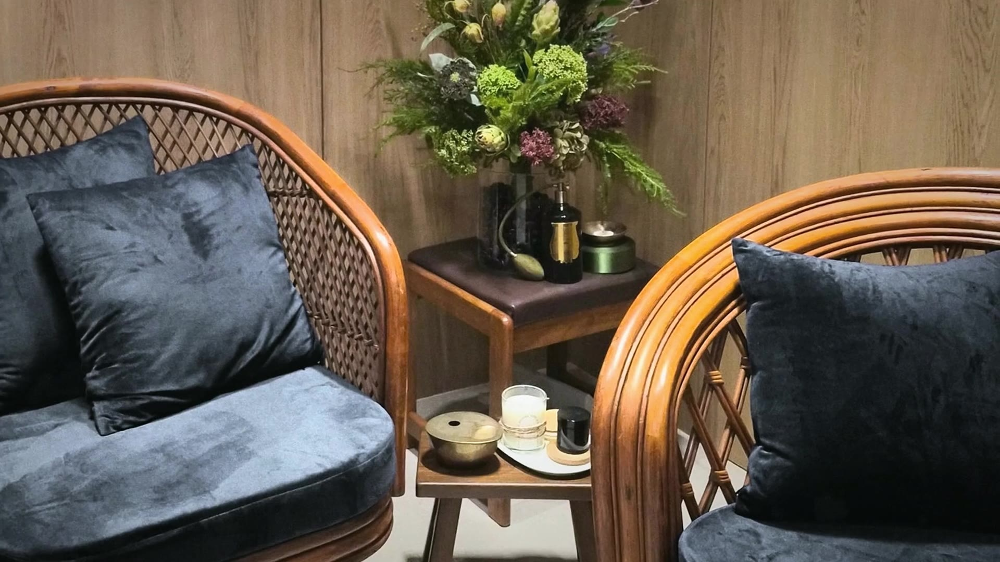
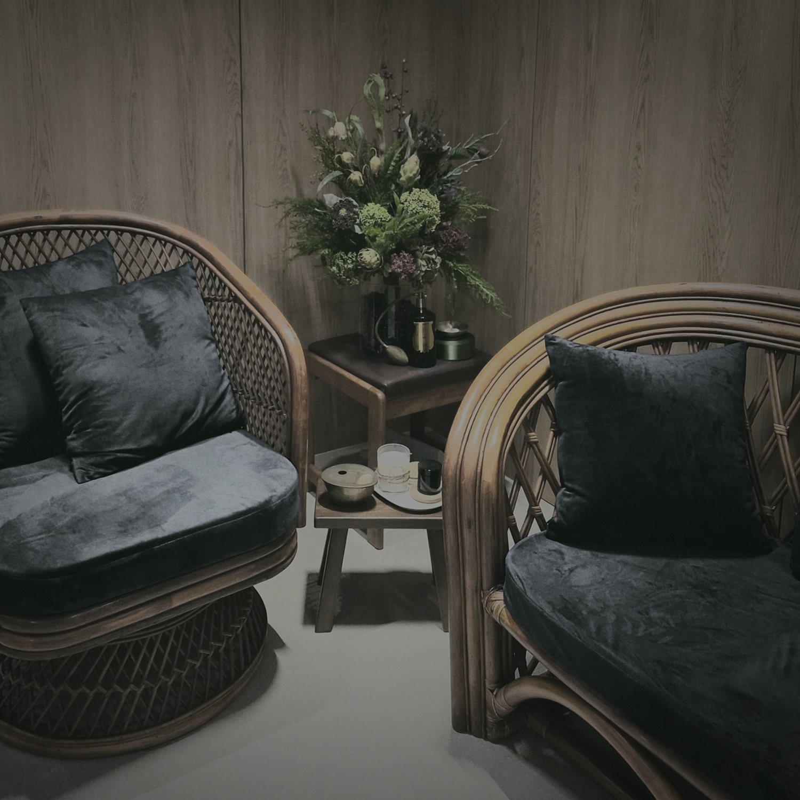

01
스케일링부터 모든 진료,
원장 직접
진단과 촬영, 스케일링까지
치료의 전 과정을 원장이 직접 봅니다.
꼭 필요한 치료를
건강보험 기준 안에서 합니다.

Standards & Principles
기준을 따르고, 원칙을 지킵니다
진단과 촬영, 스케일링까지
치료의 전 과정을 원장이 직접 봅니다.
누구에게나, 언제나
같은 기준으로 안내합니다.
비급여 진료비도 인건비를 뺀
합리적인 금액으로 책정했습니다.
30분에 한 분만 진료합니다.
예약하신 분만 입장하실 수 있습니다.
예약하신 30분은
온전히 그분만을 위한 시간입니다.
평일 11–14시, 17–21시.
업무 중간이나 퇴근 후에도 오실 수 있습니다.
근거에 따라, 필요한 만큼만 치료합니다
진료 중 위 치료가 필요하다고 판단되면,
전문 · 협력 의료기관으로 안내해 드립니다.

기준을 따르고, 원칙을 지킵니다

예약은 온라인으로만 받습니다.
별도 회원가입은 필요하지 않습니다.(네이버 간편로그인)
원하시는 시간을 선택합니다.
예약금 2만 원을 결제하면 예약이 확정됩니다.
확정 후 받으신 링크로 작성합니다.
예약 시각 10분 전부터 10분 후까지 입장코드로 들어오십니다.
진료비에서 예약금을 뺀 금액만 결제합니다.
진료실은 오직 예약하신
한 분만을 위해 준비됩니다.
S&P가 일하는 방식이 낯설게 느껴지실 수 있습니다.
자주 받는 질문에 미리 답해 두었습니다.
진료에 관한 이야기를 나누는 상담, 그 자체도 치료 행위의 일부이기 때문입니다.
치료는 의사가 해야 한다고 생각합니다.
스케일링도 ‘치료’입니다.
스케일링을 하면서 개별 치아와 입 속 조직을 자세히 살펴볼 수 있습니다.
입 속 환경 및 상태에 대한 포괄적인 파악도 가능합니다.
따라서, 스케일링은 그 자체로 치료이자, 다음 치료를 위한 중요한 과정이기에 제가 직접 합니다.
간소한 공간은 그만큼 유지 비용도 적습니다.
비용으로부터의 자유로움은 진료의 기준&원칙을 지키는 데 큰 도움이 됩니다.
‘그냥 따라온 김에’도 좋습니다.
하지만 기왕이면 제대로 해야 하지 않을까요.
저는 그렇게 했으면 합니다.
사전문진표는 환자분의 시간을 아껴줍니다.
충분한 고민과 생각을 바탕으로 작성하실 여유도 있습니다.
이러한 정보들은 제가 진료를 미리 준비하는 데 큰 도움이 됩니다.
진료시간에는 진료에만 집중하고자 합니다.
전화를 받으려면, 지금 진료 중인 분에게서 잠시 눈을 떼야 합니다.
문자든 전화든 결국 예약을 유도하는 쪽으로 흐르기 쉽습니다.
방문이 필요한 시점은 환자분이 가장 잘 아십니다.
(필요한 경우에는 제가 미리 말씀드립니다)
불필요한 연락 자체가 마케팅으로 느껴지고, 피로감을 준다고 생각합니다.
공간이 크면, 유지하는 데 드는 비용도 커집니다.
그 비용은 결국 진료수입으로 채워야 합니다.
저는 그렇게 하고 싶지 않았습니다.
예약시간은, 그 시간만큼은 온전히 예약자 한 분을 위한 시간이라는 뜻입니다.
‘예약’은 들인 수고에 따라 가지는 예약자 개인의 ‘권리’입니다.
앞사람이 늦어지면 다음 분의 시간이 줄어듭니다.
일찍 오셔도 마찬가지입니다.
그래서 시작 시간도, 마치는 시간도 정해진 대로 지키려 합니다.
시간은 모두에게 똑같이 소중하니까요.
진료 시간을 30분 단위로 정한 것도 같은 이유입니다.
가능한 진료 범위를 명확히 정하고, 약속한 시간을 지키기 위해서입니다.
안타깝게도 모든 치료는 언젠가 다시 하게 됩니다.
병이 재발하고, 치료는 결국 실패하게 되지요.
치료를 반복할수록 치아는 깎여 사라집니다.
GI는 반복하더라도 치아 변성·삭제가 가장 적은 대표적인 재료입니다.
(많은 연구에서 GI를 이용한 치료는 실패가 상대적으로 “slow and repairable”하다고 보고합니다)
모든 재료에는 단점과 한계가 있습니다.
따라서 GI를 중심으로 다양한 조합과 변주를 개별 환자·치아별로 적용합니다.
건보공단과 심평원이 인증한 이유는 단순히 저렴해서가 아닙니다.
오랜 기간, 많은 증례를 통해 검증된 재료이기 때문입니다.
모든 분께 언제나 같은 금액을 안내합니다.
| 진료항목 | 진료비 | 기준 |
|---|---|---|
| 치아~잇몸 경계 부위 | 5만 원 | 치아 당 |
| 씹는 면 | 7만 원 | 치아 당 |
| 진료항목 (재료별 분류) | 진료비 | 기준 |
|---|---|---|
| 골드“적은 치아 삭제량 & 적응이 쉬운” | 변동국제시세 연동 | 치아 당 |
| 3M LAVA™ Ultimate독일 바이에른주 생산“감쪽같고 단단한” | 40만 원 | 치아 당 |
| MAZIC Duro㈜VERICOM 한국 개발 특허 기술 · 춘천시 생산“레진치료 후 시큰거림, 못 씹는 치아를 편하게” | 25만 원 | 치아 당 |
| 진료항목 | 진료비 | 기준 |
|---|---|---|
| 홈 메우기SHOFU INC. BeautiSealant 사용 · 일본 교토시 생산 | 2만 원 | 치아 당 |
| 불소도포Centrix™ FluoroDose 사용 · 미국 코네티컷주 생산NaF 성분 22,600 ppm 함유흡수 & 효과 유지가 유리한 varnish 형태 | 3만 원 | 모든 치아 |
| 진료항목 | 진료비 | 기준 |
|---|---|---|
| 착색제거치아 손상 없는 비접촉 파우더 분사 방식‘담배 & 커피 착색, 입냄새 감소 효과’ | 5만 원 | 모든 치아 |
| 신경 보존치료Vital Pulp Therapy뿌리 쪽 신경을 살려 두는 치료법(일반 신경치료는 모두 제거)“치료 후에도 신경이 살아 있어” 영양 공급 & 방어 능력 유지 | 5만 원 | 치아 당 |
발급에 필요한 비용입니다.
| 항목 | 비용 |
|---|---|
| 진단서 | 1,000원 |
| 진료의뢰서 | 1,000원 |
| 진료 · 통원확인서 | 1,000원 |
| 진료기록부 사본1–5매 장당 1,000원 · 6매부터 장당 100원 | 장당 1,000원 / 100원 |
보내 주신 분이 동의하시면, 의견과 병원의 답변을 이곳에 게시합니다.
기존 페이지의 방침 전문을 그대로 옮겨 실을 자리입니다.